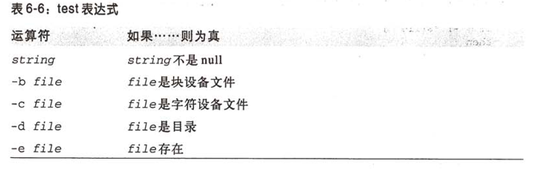
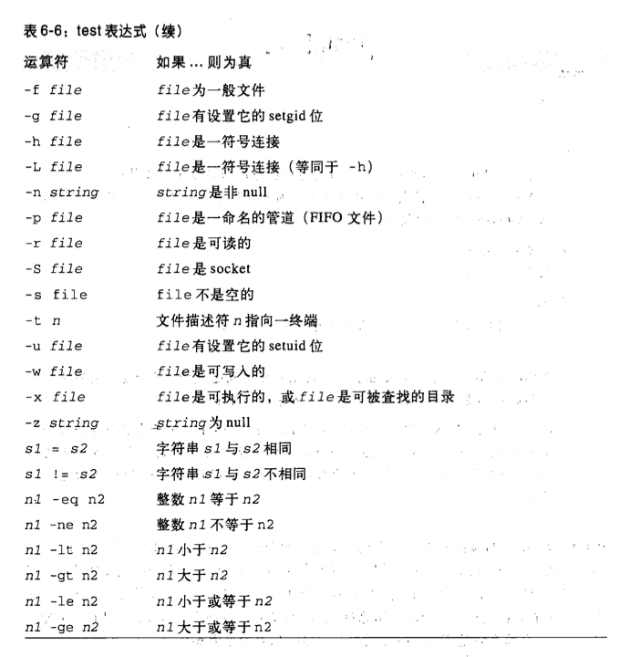

分支
典型例子
if grep a file
then
echo a
elif grep b file
then
echo b
else
echo c
fi
值得注意的是 grep 成功返回的 $? = 0 此时if反而成功了。
test
test expression 与 [ expression ]
 
case
case $1 in -f) -d | --directory) # 多个选择 *) #default esac
for
for i in *.cpp
do
cat $i
done
# 默认循环 "$*"
for i
do
cat $i
done